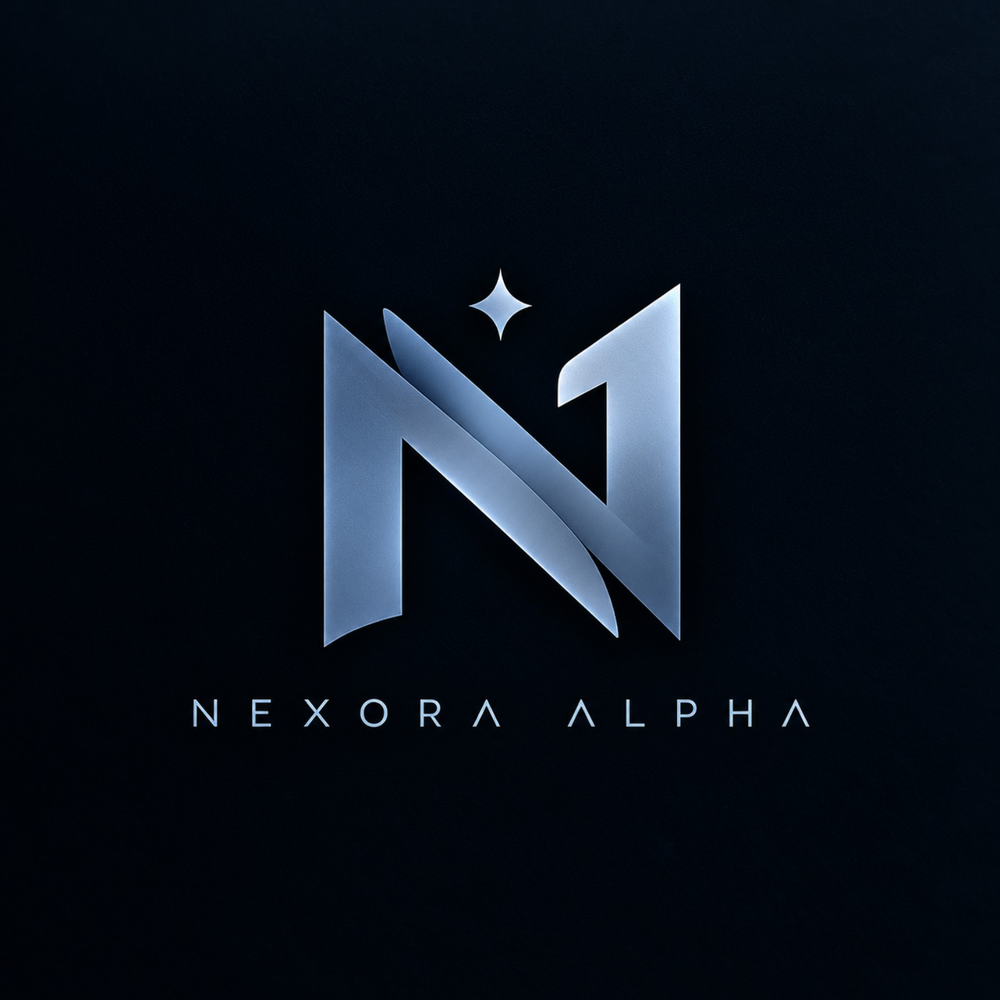

🟡
XAUUSD
Gold / USD • OANDA
● LIVE FEED

Member Access • Trade Smart. Manage Risk. Build Legacy.
Trade Smart. Manage Risk. Build Legacy. Jelajahi market, bangun fondasi trading, dan pelajari cara membaca pergerakan harga dengan lebih terstruktur.
Harga market diperbarui otomatis dari live market-data feed. Data ditampilkan sebagai informasi pasar, bukan sinyal trading.
Gold / USD • OANDA
EUR / USD • FX
BTC / USD • Binance
AAPL / NASDAQ
Cari simbol, ganti timeframe, zoom/pan, tambah indicator, dan pakai drawing tools langsung di chart. Search simbol juga tersedia dari toolbar chart seperti workflow TradingView.
Pantau event makro yang paling relevan buat trader: FOMC • CPI • PPI • NFP. Kalender di bawah mengambil jadwal dan update event ekonomi secara live dari TradingView.
Keputusan suku bunga & komunikasi Federal Reserve. Fokus utama untuk USD, gold, indeks, dan crypto.
Inflasi konsumen AS. Surprise terhadap forecast sering memicu volatilitas besar di USD & XAUUSD.
Inflasi producer AS. Berguna sebagai konteks tekanan harga sebelum membaca CPI berikutnya.
Data payroll AS. Salah satu event tenaga kerja paling diperhatikan pasar setiap bulan.
Pilih modul untuk membuka halaman pembelajaran. Trading Psychology memiliki 10 bab dan Risk Management memiliki 8 bab yang bisa dibuka satu per satu.
Gabung ke ekosistem Nexora Alpha dan tetap terhubung dengan komunitas.
8 bab yang bisa lu buka satu per satu. Pelajari cara mengontrol risk, exposure, drawdown, dan menjaga modal.
10 prinsip yang bisa lu buka satu per satu. Pilih bab untuk masuk ke materi lengkapnya.
Konsep dasar sampai roadmap liquidity. 6 bab yang bisa lu buka satu per satu, plus fondasi “Apa Itu Liquidity?” sebelum mulai seri.
Materi pembelajaran Nexora Academy.
Materi pembelajaran Nexora Academy.